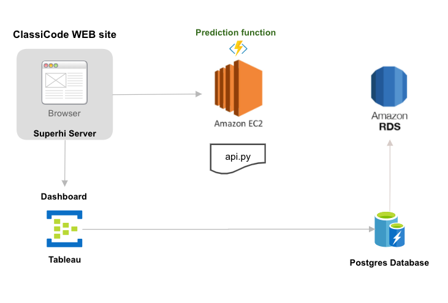

Los datos y nuestro modelo de Machine Learning son la esencia de ClassiCode.
Fuente de Información
Secop I & Secop II
Más de 6 millones de contratos
Tecnología de Punta
Fácil de utilizar, reduce la complejidad en el proceso de contratación, aumenta la precisión y le ahorrará tiempo a la hora de crear nuevos contratos.
¡ ClassiCode es la solución que estaba esperando !